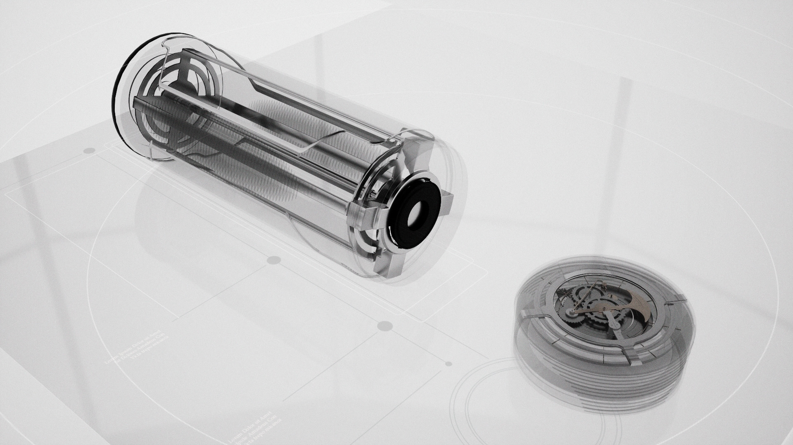
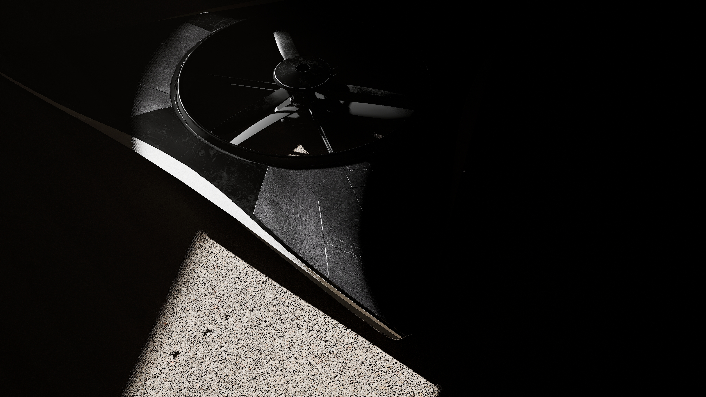

Innsikt
Hvorfor design sparer penger i lengden
Design koster litt i starten, men sparer ofte mye senere. Her er hvorfor.
Finner feil tidlig
Med skisser, prototyper og raske tester finner du problemer før produksjon. Endringer tidlig er billige. Endringer sent er dyre.

Brukerfokus gir færre returer
Når produktet er laget for ekte bruk, får du færre klager, færre returer og mindre supportbehov.
Det betyr lavere driftkostnader etter lansering.

Bedre totaløkonomi
God design gir ofte høyere opplevd verdi, bedre marginer og lengre produktlevetid. På lang sikt er dette en investering, ikke en ekstrautgift.